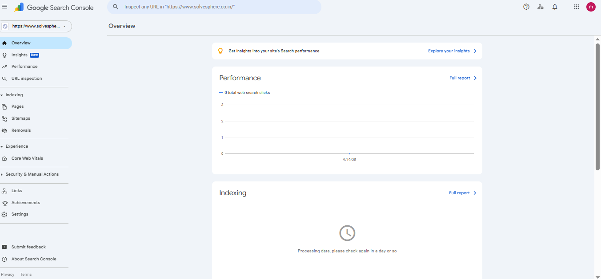
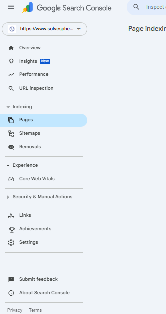
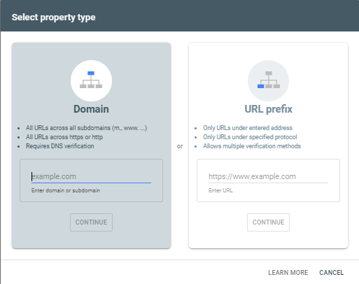
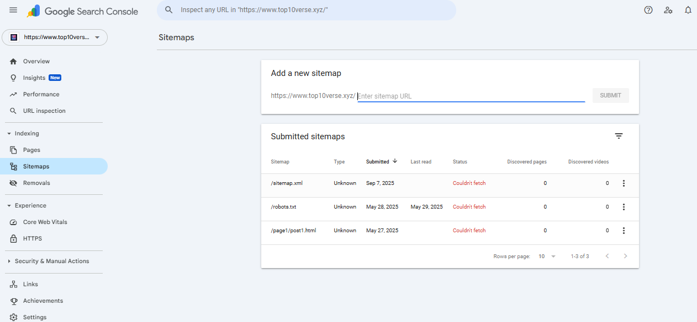

1. Introduction
Google Search Console (GSC) is a free tool by Google for monitoring website performance. It tracks clicks, impressions, ranking positions, and indexing issues. GSC helps identify technical issues, Core Web Vitals, mobile usability problems, and more. Proper use ensures improved search visibility and better user experience. It’s essential for blogs, e-commerce sites, or any web presence to stay competitive.
2. Key Features
Performance Report, URL Inspection, Coverage Report, Sitemaps, Mobile Usability, Core Web Vitals, Manual Actions, and Links Report are core features. Each provides insights to maintain a healthy site, improve SEO, and troubleshoot errors. Regularly reviewing these features maximizes visibility and ranking.
3. Why Use GSC
Google Search Console (GSC) is an essential tool for any website owner aiming to improve SEO performance and visibility. By monitoring your site through GSC, you can track which keywords drive traffic, see how your pages rank in search results, and identify issues that may prevent pages from being properly indexed. Understanding metrics like clicks, impressions, and click-through rate (CTR) helps you evaluate which content resonates with your audience and which pages need optimization.
GSC also helps uncover technical issues, such as crawl errors, broken links, or mobile usability problems. Fixing these promptly ensures search engines can fully access and understand your content. Additionally, you can discover which pages are underperforming and adjust meta titles, descriptions, and on-page content accordingly. Using GSC consistently provides actionable insights that support both content strategy and overall website health, making it an indispensable tool for long-term SEO success.
4. Step-by-Step Setup
Setting up GSC correctly ensures accurate tracking and reporting. Start by verifying your website ownership. Google offers multiple verification methods: add a DNS TXT record, upload an HTML verification file to your server, or use your Google Analytics or Google Tag Manager account. Once verified, submit your sitemap.xml to help Google discover your pages faster and prioritize crawling. This is especially important for new websites or after publishing a large amount of content.
Optionally, connecting GSC with Google Analytics allows for deeper insights into user behavior, engagement, and conversions. After setup, regularly monitor the Coverage Report to identify errors, warnings, or excluded pages. Correcting issues like 404 errors, blocked resources, or redirect chains ensures your site remains fully crawlable. A properly configured GSC account gives you a complete picture of your site’s health, indexing status, and search performance.
5. Analyzing Data
Once GSC is set up, analyzing its data becomes critical for ongoing SEO improvement. Track clicks, impressions, CTR, and average position for your pages to understand how users find your content. Identify pages with high impressions but low CTR—these may need optimized meta titles and descriptions to attract more clicks. Similarly, pages with low impressions could benefit from better internal linking, content improvements, or targeting additional keywords.
The Index Coverage report highlights which pages are successfully indexed and which have issues. Resolve any errors or warnings promptly to maintain healthy visibility. Search Analytics can also reveal trends over time, helping you adapt your content strategy, identify seasonal patterns, and refine targeting. Regularly reviewing GSC data empowers you to make informed decisions, boost organic traffic, and maximize the impact of your SEO efforts.
6. Common Issues & Fixes
Even after setting up Google Search Console (GSC) correctly, many website owners encounter issues that prevent proper indexing or reduce visibility in search results. Understanding the common problems and how to fix them is essential to maintain SEO performance and ensure your content reaches the right audience.
Pages Not Indexed: One of the most frequent issues is pages not appearing in Google search results. This can happen due to crawl errors, robots.txt restrictions, or the absence of internal links. Use GSC’s URL Inspection tool to check individual pages. If a page hasn’t been indexed, click “Request Indexing” after ensuring it’s live and free of errors. Regularly submitting an updated sitemap also helps Google discover new or updated content faster.
Server Errors: HTTP errors like 500 (Internal Server Error) or 503 (Service Unavailable) indicate server problems. These can prevent Googlebot from accessing your site, negatively impacting indexing and ranking. Check your hosting logs or server monitoring tools to identify issues. Common fixes include optimizing server resources, updating software, or contacting your hosting provider for assistance.
Mobile Usability Issues: Google prioritizes mobile-friendly websites. GSC reports problems like text too small, clickable elements too close together, or viewport misconfigurations. Addressing these issues often involves adjusting CSS styles, ensuring responsive layouts, and testing your pages across multiple devices and screen sizes.
Core Web Vitals Warnings: Google uses Core Web Vitals—metrics like Largest Contentful Paint (LCP), First Input Delay (FID), and Cumulative Layout Shift (CLS)—to measure page experience. Slow-loading pages, unoptimized images, or unstable layouts can trigger warnings. Fix these by compressing images, using modern file formats, implementing lazy loading, and stabilizing dynamic content to reduce layout shifts.
Regular monitoring of Google Search Console is crucial. Check performance reports, coverage issues, and enhancements weekly. By identifying and addressing errors proactively, you ensure your website remains healthy, user-friendly, and visible in search results, ultimately supporting long-term SEO success.
7. Best Practices
Submit sitemaps after updates, keep URLs clean, fix errors promptly, update old posts, and use GSC data to discover new keywords for content creation.
8. Pro Tips
Combine GSC with Google Analytics, use regex filters in performance reports, export data for analysis, and implement findings to improve SEO and conversions.
9. FAQ
- Q: How often does GSC update data?
A: Usually once per day; some reports update within hours. - Q: Is GSC free?
A: Yes, completely free. - Q: How long to index a new page?
A: Can be instant, but usually within a few hours to days. - Q: Why impressions show but no clicks?
A: Possibly due to low CTR; optimize title and description.
10. Conclusion
GSC is a free, essential tool to monitor website performance, fix errors, and optimize SEO. Use it regularly for maximum visibility and growth.